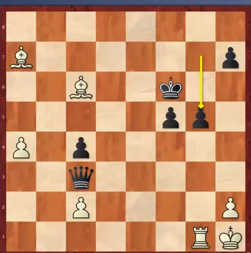
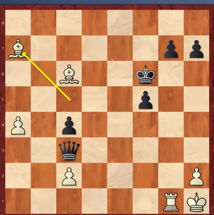
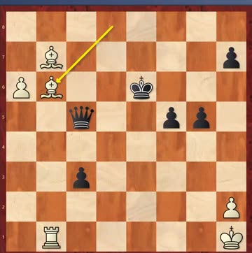
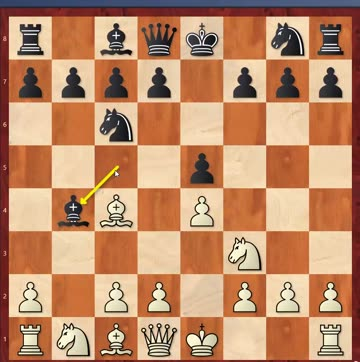
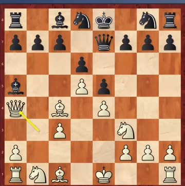
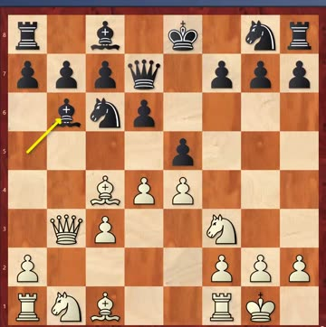

“Sleep well the night before”
The puzzles are getting harder on purpose. Coach opened by saying so, and then said why it's worth it:
The seven-round Swiss finished. Twenty students in the Saturday group; the top two places both went to girls, and third was a big tie. Next comes a round-robin, and Coach was clear about how to treat it: “训练对局不要在意结果，要注重过程，要注重学到了什么” — in training games don't worry about the result, pay attention to the process and to what you learned. Especially when you lose: work out where you lost, so you don't repeat it at a real tournament.
This was JJ's hidden set, so the playable boards now show the full lines. All six are Black to move, and all six are mates. Only two students in the room got all six.
The word for the week is decoy, and Coach explained it with sweets:
The new sheet, 49–54, is up as playable boards with the answers hidden. Watch the triangles on that one — five are Black to move but 52 is White.
Candidates semi-final, Denver, July 1971 · Fischer won all six · game 1 was a French Winawer (C19) on 6 July
Last week it was Taimanov 6–0. This week's opponent was supposed to stop him. Bent Larsen of Denmark was rated the strongest player in the Western world and widely thought to be Fischer's hardest test. The result was 6–0 again — and Coach's point is that two 6–0 scores in a row at that level had never happened before and almost certainly never will again.
Larsen made three mistakes, and only one of them was on the board.
Game 1. A French Winawer, and genuinely level for three hours. Then at the critical moment the tiredness showed and Larsen played …g5? instead of bringing the king up with …Kg6 or …Kg5. Fischer pushed a pawn through and it couldn't be stopped.



Two things to take from the endings. Larsen counted material, saw he wasn't worse, and missed how strong two bishops are together — “double bishop 太强了，Bishop pair 太强了”. And the win came the way these wins usually come: walk the king up, make an outside passed pawn, and the defender runs out of moves.
And the detail nobody forgets. Taimanov went to hospital for three days during the last match. Larsen went to hospital for three days during this one — and Fischer again agreed to wait rather than claim the game. “Fischer 把两个对手打进医院里” — he put both opponents in hospital. Coach's wry note: that happens in boxing, not in chess.
C52 Evans Gambit · 1.e4 e5 2.Nf3 Nc6 3.Bc4 Bc5 4.b4 · you'll be Black again
Where it comes from. Captain Evans was a ship's captain. Before aeroplanes, sailing to China took a month, and he worked on chess during the voyages — he invented this gambit at sea. It's not a toy: plenty of professionals have used it, and Kasparov played it twice in 1995 and won both games.
What White wants. 4.b4 offers a pawn to make your bishop move again, then 5.c3 and 6.d4 build a big centre with tempo. If you drift, your knight ends up with nowhere to go.



The answer is the Lasker Defence, and it's over a hundred years old. Lasker's treatment is the reason you don't see the Evans Gambit very often any more, and it's still regarded as the best reply today.
How it goes. 1.e4 e5 2.Nf3 Nc6 3.Bc4 Bc5 4.b4 Bxb4 — take the pawn; Steinitz's rule is that the way to meet a gambit is to accept it. Then 5.c3 Ba5 6.d4 d6, and after 7.Qb3 comes the move: 7…Qe7!
Why Qe7 and not Qf6. Coach was emphatic about the square, and the engine backs him hard: after 7…Qe7 Black finishes the opening a touch better than White once …Bb6 and castling follow. After 7…Qf6 instead, Black is nearly four pawns worse. Same-looking move, completely different game.
Then the plan is simple: …Bb6 and castle, and be happy to trade off White's good bishop. Don't get greedy for a second pawn — sometimes handing it back is the better deal. White is the one left a pawn down with a damaged structure.